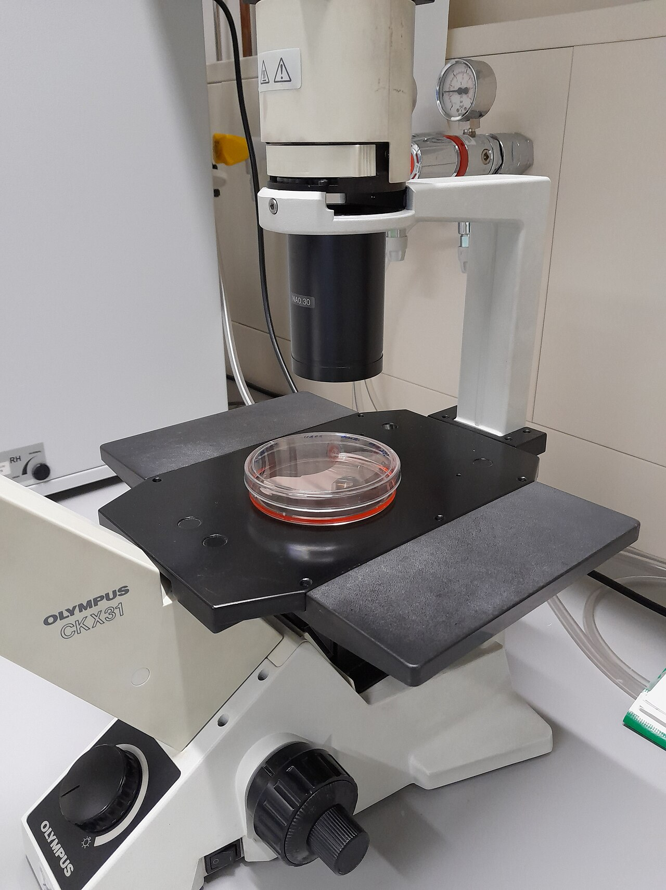

动物细胞工程（一）：动物细胞培养
本期导读
动物细胞工程（一） · 培养条件 · 干细胞

视频原话 · 导读3 句
- 同学们好！这节课梳理人教版选择性必修三第二章第二节的第一部分——动物细胞培养。8.4s
- 高考常考动物细胞培养的条件、原代培养和传代培养，以及干细胞的类型和应用。7.9s
- 我们按七个考点梳理，每个考点都讲清楚怎么考、怎么做。5.6s
动物细胞工程01#
- 动物细胞工程
- 动物细胞培养基础
- 动物细胞融合
- 动物体细胞核移植
动物细胞培养：取出动物组织，分散成单个细胞，在适宜条件下让细胞生长和增殖
解题方法
动物细胞培养的原理是细胞增殖；植物组织培养的原理才是细胞全能性
视频原话4 句
- 考点一，动物细胞工程。常用的技术有动物细胞培养、动物细胞融合和动物体细胞核移植等。9.5s
- 其中，动物细胞培养是动物细胞工程的基础。4.6s
- 动物细胞培养，是从动物体中取出相关的组织，把它分散成单个细胞，在适宜条件下让这些细胞生长和增殖的技术。10.8s
- 考法：问原理。解题方法：动物细胞培养的原理是细胞增殖，不是细胞全能性。8.3s
培养条件02#
营养
糖类、氨基酸、无机盐、维生素等
通常加入血清等天然成分
通常加入血清等天然成分
无菌、无毒
培养液和用具灭菌
无菌操作
定期更换培养液，清除代谢物
无菌操作
定期更换培养液，清除代谢物
温度、pH、渗透压
哺乳动物细胞
36.5 ℃ 左右
pH 7.2～7.4
36.5 ℃ 左右
pH 7.2～7.4
气体环境
95% 空气 + 5% CO2
CO2 培养箱
CO2 培养箱
易错
O2 是细胞代谢所必需的；CO2 的主要作用是维持培养液的 pH
视频原话5 句
- 考点二，动物细胞培养的条件。第一，营养：糖类、氨基酸、无机盐、维生素等，通常还要加入血清等天然成分。11.5s
- 第二，无菌、无毒的环境：培养液和用具要灭菌，还要定期更换培养液，清除代谢物。8.7s
- 第三，适宜的温度、pH和渗透压：哺乳动物细胞多在 36.5 ℃ 左右，pH 为 7.2～7.4。10.1s
- 第四，气体环境：95% 空气 + 5% CO2，放在 CO2 培养箱中培养。8.9s
- 易错：O2是细胞代谢所必需的；CO2的主要作用是维持培养液的pH。7.7s
原代与传代培养03#
取动物组织
→
剪碎
→
胰蛋白酶、胶原蛋白酶处理
→
细胞悬液
原代培养
分瓶之前的培养
→
胰蛋白酶处理
→
分瓶
→
传代培养
分瓶之后的培养
原代培养：动物组织经处理后的初次培养
传代培养：分瓶之后的细胞培养
易错
不能用胃蛋白酶：它的最适 pH 呈酸性，而动物细胞培养液的 pH 接近中性
视频原话4 句
- 考点三，动物细胞培养的过程。取动物组织，剪碎，用胰蛋白酶、胶原蛋白酶等处理，分散成单个细胞，制成细胞悬液。11.9s
- 把细胞悬液放入培养瓶中培养，这是原代培养，也就是分瓶之前的培养。7.1s
- 细胞长满后，再用胰蛋白酶处理，分瓶继续培养，这就是传代培养。6.6s
- 易错：不能用胃蛋白酶，因为胃蛋白酶的最适pH是酸性，而动物细胞培养液接近中性。8.9s
贴壁与接触抑制04#
原代培养的细胞长满瓶壁后，要用胰蛋白酶处理，分瓶传代
解题方法
传代时用胰蛋白酶处理，是为了让贴壁细胞从瓶壁上脱离，分散成单个细胞
视频原话4 句
- 考点四，贴壁生长和接触抑制。悬液中分散的细胞很快就贴附在瓶壁上，这叫细胞贴壁。9.2s
- 贴壁细胞分裂生长，当细胞表面相互接触时，通常会停止分裂增殖，这叫接触抑制。8.3s
- 所以，原代培养的细胞长满瓶壁后，要用胰蛋白酶处理、分瓶传代。6.8s
- 考法：传代时为什么要用胰蛋白酶？解题方法：让贴壁的细胞从瓶壁上脱离，分散成单个细胞。9.7s
干细胞的类型05#
| 类型 | 来源 | 分化潜能 |
|---|---|---|
| 胚胎干细胞（ES 细胞） | 早期胚胎 | 可分化为成年动物体内任何一种类型的细胞，形成所有组织器官甚至个体 |
| 成体干细胞 | 成体组织：骨髓中的造血干细胞、神经干细胞等 | 一般只能分化成特定的细胞或组织 |
| 诱导多能干细胞（iPS 细胞） | 体外诱导成纤维细胞等体细胞 | 类似胚胎干细胞 |
易错
成体干细胞不具有发育成完整个体的能力；ES 细胞的分化潜能最大
视频原话5 句
- 考点五，干细胞的类型。胚胎干细胞，简称ES细胞，存在于早期胚胎中。7.8s
- 它具有分化为成年动物体内任何一种类型的细胞，并形成机体所有组织和器官、甚至个体的潜能。9.1s
- 成体干细胞，存在于成体组织中，比如骨髓中的造血干细胞、神经干细胞。它们一般只能分化成特定的细胞或组织。11.2s
- 诱导多能干细胞，简称iPS细胞，是通过体外诱导成纤维细胞等，获得的类似胚胎干细胞的细胞。9.5s
- 易错：成体干细胞不具有发育成完整个体的能力；ES 细胞的分化潜能最大。7.6s
干细胞的应用06#
造血干细胞
骨髓移植等
治疗白血病等疾病
治疗白血病等疾病
ES 细胞
必须从胚胎中获取
涉及伦理问题，应用受限
涉及伦理问题，应用受限
iPS 细胞
来源于病人自身的体细胞
理论上可避免免疫排斥
理论上可避免免疫排斥
风险：可能导致肿瘤发生
易错
iPS 细胞也有风险，可能导致肿瘤的发生；答题时优点、风险都要想到
视频原话4 句
- 考点六，干细胞的应用。造血干细胞移植，比如骨髓移植，可以治疗白血病等疾病。8.3s
- ES细胞必须从胚胎中获取，涉及伦理问题，应用受到限制。6.3s
- iPS细胞可以来源于病人自身的体细胞，用它培育的细胞或器官移植回病人体内，理论上可以避免免疫排斥。10.4s
- 易错：iPS细胞也有风险，比如可能导致肿瘤的发生；不要只记优点。7.1s
与植物组培比较07#
| 比较项目 | 植物组织培养 | 动物细胞培养 |
|---|---|---|
| 原理 | 细胞的全能性 | 细胞增殖 |
| 培养基 | 固体培养基，加植物激素 | 液体培养基，常加血清 |
| 前处理 | 外植体消毒 | 胰蛋白酶分散成单个细胞 |
| 结果 | 完整植株 | 细胞群（不是个体） |
易错
动物细胞培养不能体现细胞的全能性，因为没有发育成完整个体
视频原话4 句
- 考点七，动物细胞培养与植物组织培养的比较。原理不同：植物组织培养是细胞的全能性，动物细胞培养是细胞增殖。12.0s
- 培养基不同：植物用固体培养基，加植物激素；动物用液体培养基，常加血清。8.0s
- 结果不同：植物组织培养得到完整植株；动物细胞培养得到的是细胞群，不是个体。8.3s
- 易错：动物细胞培养不能体现细胞的全能性，因为没有发育成完整个体。7.0s
易错速查✓
先自己判断，再点按钮查看对错与解析。
- 1动物细胞培养常需加入血清等天然成分说法正确。
- 2气体环境中的CO2主要用于细胞呼吸说法错误：CO2主要作用是维持培养液的pH
- 3分散动物组织可以用胃蛋白酶说法错误：用胰蛋白酶、胶原蛋白酶
- 4接触抑制时需要分瓶进行传代培养说法正确。
- 5成体干细胞能发育成完整个体说法错误：成体干细胞一般只分化为特定细胞
- 6动物细胞培养不能体现细胞的全能性说法正确。
胰酶分散、血清营养，CO2 稳 pH！
视频原话 · 易错速查5 句
- 最后，用六道判断题检验一下。3.6s
- 判断一：动物细胞培养常需加入血清等天然成分？对。判断二：CO2主要用于细胞呼吸？错，主要是维持培养液的pH。13.4s
- 判断三：分散动物组织可以用胃蛋白酶？错，用胰蛋白酶。判断四：接触抑制时需要分瓶传代？对。11.4s
- 判断五：成体干细胞能发育成完整个体？错。判断六：动物细胞培养不能体现细胞的全能性？对。11.1s
- 七个考点串成一条线：胰酶分散、血清营养，CO2稳pH。我们下期再见！8.3s
图片来源
图片来源：Wikimedia Commons —— Darja.Lavogina《Petri U2OS 20221105》CC BY-SA 4.0
Photo: Darja.Lavogina, CC BY-SA 4.0